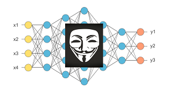

As a part of the Data Science course, I carried out an EDA as my
project based
upon the Corona Virus Dataset given by the staff of the course. Unfortunately the dataset lacked
a lot
of important information and was not properly populated. However, I tried to visualize the data
and identify
any significant trend or information among the data by plotting Heatmap, Pie chart, Bar Graph,
and Correlation Graph.

I along with my teammates implemented three ML attacks when attending the course titled Privacy
Enhancement Technologies by Prof. Yang Zhang at Saarland University on Summer Semester 2020.
Three ML Attacks are:
- Membership Inference Attack
- Model Inversion Attack
- Model Stealing Attack
Datasets that we used here are MNIST, FASHION MNIST and CIFAR 10.

As part of my final project for the Machine Learning in Cybersecurity course
from Prof. Dr. Mario Fritz from Saarland University, I conducted this project
to relax a few assumption considered in the paper titled ML-Leaks: Model and
Data Independent Membership Inference Attacks and Defenses on Machine
Learning Models by Salem et al.
I modified the first adversary 1 from the paper by proposing that
the membership inference attack can be accomplished by retaining only
reasonably close accuracy of the shadow model as the target model.
It is not necessary that the shadow model has to has the same ML algorithm
and hyperparameters as the target model.